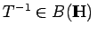

Sei ein kompakter Operator. Dann ist T Grenzwert (in ) einer Folge von endlichdimensionalen Operatoren. Die Nähe zum endlichdimensionalen Fall ersieht man unter anderem aus folgendem:
Ist C ein endlichdimensionaler Operator und , dann folgt aus der Injektivität von T die Existenz von T-1 und .
Ist C ein kompakter Operator, dann sind äquivalent: